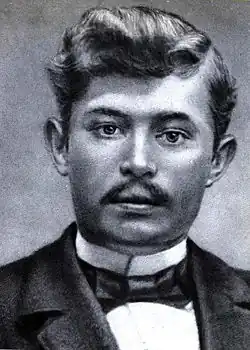
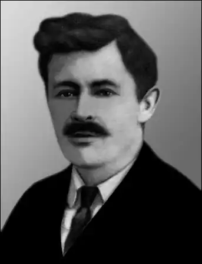

СТЕПАН ВАСИЛЬЧЕНКО
(1879 — 1932)
Степан Васильович Васильченко (Панасенко) народився 8 січня 1879р. в містечку Ічня на Чернігівщині в бідній сім'ї ремісника. Трудова атмосфера, в якій зростав Васильченко, навчання в Коростишівській семінарії та Глухівському учительському інституті напередодні й у часи революційних подій 1905р., "неспокійна", за його висловом, праця "неблагонадійного" вчителя в сільських школах на Київщині та Полтавщині, а також посилений інтерес до народної творчості, до поезії Шевченка, світової класики, — все це сприяло збагаченню життєвого і мистецького досвіду майбутнього письменника. У літературний процес Васильченко включився зрілим митцем із своїм власним поетичним голосом у 1910р., коли з'явились друком такі оригінальні його твори, як "Мужицька арихметика", "Вечеря", "У панів", "На чужину", "Циганка" та ін., пройняті любов'ю до людини праці, утвердженням віри в перемогу соціальної справедливості. Цьому передували тривалі роки становлення світоглядно-естетичних поглядів письменника, напружених пошуків ідей та форм художнього осмислення дійсності. Не випадково однією з провідних тем творчості Васильченка є життя народних учителів, яке було йому — педагогові за фахом і покликанням — особливо близьким. "Записки вчителя" (1898 — 1905) та інші щоденникові записи, куди Васильченко, за його визнанням, систематично "заносив свої учительські жалі та кривди", стали згодом документальною основою багатьох реалістичних новел і оповідань. Дебютував письменник на літературній ниві оповіданням "Не устоял" (надруковане 1903р.). Згодом письменник значно доопрацював це оповідання й опублікував українською мовою під назвою "Антін Вова" (1910) (в наступних виданнях — "Вова"). У 1910 — 1912 рр. Васильченко пише й друкує цикл новел і оповідань, присвячених учительській темі ("Вечеря", "З самого початку", "Божественна Галя", "Над Россю", "Гріх" та ін.). Проблема виховання нової людини значною мірою зумовила звернення Васильченка до художнього опрацювання дитячої тематики, органічно пов'язаної з творами про вчителів. Глибоке розуміння психології дитини дало змогу Васильченку показати у своїх творах цікавий, поетичний духовний світ дитини. Не можна без хвилювання читати психологічні етюди письменника "Дощ", "Дома", "Волошки", "Петруня", оповідання "Роман", "Увечері", "Свекор", "Басурмен" та ін. Оптимізм Васильченка з особливою виразністю виявився в одному з найкращих його творів, присвячених дітям, — "Циганка". Невеликий цикл у творчості Васильченка складають оповідання, в яких йдеться про обдаровані натури з демократичних низів, про долю народних талантів ("На хуторі", "У панів", "На розкоші" та ін.). Настрої збудженого революційними подіями села відбив Васильченко у новелі "Мужицька арихметика", що належить до найвищих здобутків письменника-реаліста. Жорстоку правду життя селянської бідноти розкриває Васильченко у новелі "На чужину". У новелі "Осінній ескіз" ("Із осінніх спогадів. Ескіз", 1912) Васильченко ставить питання глибше, суспільне об'ємніше — шлях сільської молоді в революцію. Окремий цикл у художньому доробку Васильченка складають твори, написані під безпосереднім враженням від першої світової війни, в якій письменник брав участь з 1914р. аж до Лютневої буржуазної революції. В "Окопному щоденнику", оповіданнях "На золотому лоні", "Під святий гомін", "Отруйна квітка", "Чорні маки" та ін. Васильченко зображує жахи імперіалістичної війни, сумні будні людей у сірих солдатських шинелях. Цікавою сторінкою спадщини Васильченка є драматичні твори, переважно одноактні п'єси, які за тематикою і багатьма художніми засобами органічно близькі його прозі (наприклад, п'єса-жарт "На перші гулі"). Після перемоги Жовтневої революції Васильченко включається в процес творення соціалістичної культури. В оповіданнях, присвячених радянській сучасності ("Приблуда", "Червоний вечір", "Авіаційний гурток", "Олов'яний перстень" та ін.), письменник показує зародження почуття колективізму в психології юних громадян, поетизує романтику праці як творчості. Багато працює Васильченко у радянський час і над творами з життя дореволюційного минулого ("Петруня", "Талант", "Віконце", "Осінні новели" та ін.). Показовим у цьому плані є цикл "Осінні новели" (присвячений 1905р.), який писав Васильченко, починаючи з 1923р., впродовж майже десяти років. Одна з художньо найдовершеніших новел циклу — "Мати" ("Чайка"). Творчість Васильченка радянського часу позначена розширенням тематичного і жанрового діапазонів, про це свідчать, крім написаних у 20-ті рр. драматичних творів ("Минають дні", "Кармелюк" та ін.), кіносценарії за фольклорними мотивами, фейлетони, цикл "Крилаті слова", переклади творів російських письменників (Гоголя, Лескова, Короленка, Серафимовича) тощо. На особливу увагу заслуговує задум Васильченка створити велику біографічну повість про Т. Шевченка. На жаль, з п'яти запланованих частин він встиг завершити тільки першу — "В бур'янах".